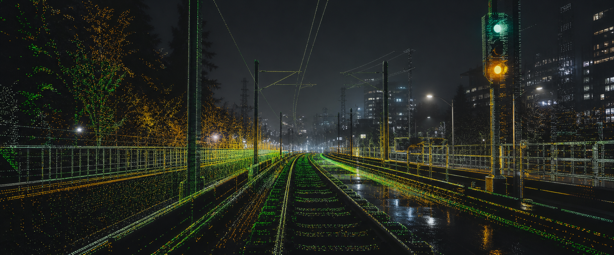

Buildable technical infrastructure for strange physical futures.
fw/r is the systems-facing wing of the portfolio: robotics, applied AI, sensing, prototyping, and the machinery required to turn abstract technical direction into something that can actually ship. Less innovation theater, more finding the wires, naming the ghost, building the rig, and making the weird thing work.
This is where the idea meets transit corridors, sensor stacks, and the delightful horror of reality.
Transit infrastructure under actual constraint.Portland/TriMet MAX rail surfaces, corridor complexity, and the kind of public-infrastructure context where sensing logic has to become accountable.
corridor / field
Live sensor feed, not decorative footage.A LiDAR-style operational surface that keeps the page rooted in systems work instead of drifting into generic “future” aesthetics.
live / mux
Simple interface. Serious operating range.
It is where vague future-facing ideas get pressure-tested against actual constraints: sensors, signals, agents, hardware, public infrastructure, messy environments, and the very human fact that the clean demo is rarely the real problem.
01 / sensing
LiDAR, radar, and perception logic
Multi-sensor rail safety work, corridor interpretation, and the practical effort of making a machine understand the part of the world that matters.
02 / evaluation
LLM harnesses with gates and reports
Sadie and Narwhal style evaluation surfaces for prompts, RAG, tool use, traces, scores, and the decisions that follow from them.
03 / prototype
Build surfaces and test rigs
Hardware benches, wiring, instrumentation, prototype loops, and the shift from abstract direction into parts that can fail honestly.
Systems surfaces

Perception logic at corridor scale.Track regions, objects, braking context, and the useful part of a sensor feed: the moment it becomes operational reasoning.
sensor / corridor
Less innovation theater. More finding the wires.
fw/r is not trying to sell the idea of technical ambition. It is trying to make technical ambition survive contact with users, agencies, hardware, and the field.
Field files for people who want the working notes, reference material, and build logic.